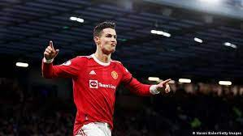
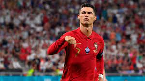
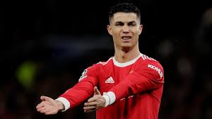
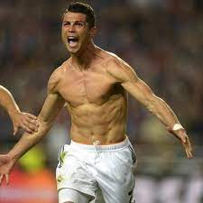
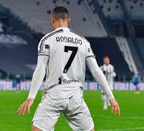
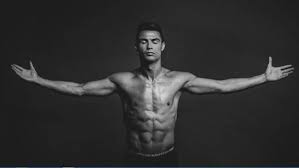
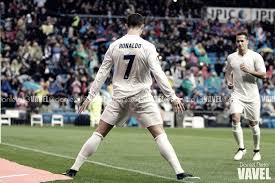
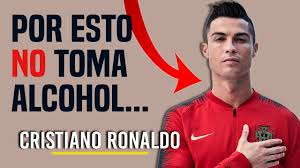
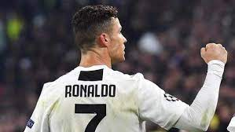

Biografia
Futbolista portugués // Aún recuerdo cuando mi maestra me decía que el fútbol no daba de comer //
Uno de los mejores jugadores de mundo.
Debut deportivo: 14 de agosto de 2002 (Sporting C. P.)
Posición: Delantero
Dorsal: 7
Estatura: 1,85 m
Padres: María Dolores dos Santos y José Dinis Aveiro
Parejas: Irina Shayk (2010-2015), Georgina Rodríguez (2016)
Hijos: Alana Martina dos Santos Aveiro, Eva Maria Dos Santos, Cristiano Ronaldo Jr., Mateo Ronaldo
Nombre: Cristiano Ronaldo dos Santos Aveiro
  Cr7
Cristiano Ronaldo Dos Santos Aveiro, es un futbolista portugués que juega como delantero y es considerado como uno de los mejores delanteros del mundo del fútbol. Nació en Funchal, Madeira el 5 de febrero de 1985 y es hijo de María Dolores dos Santos Aveiro y José Dinis Aveiro. Desde niño siempre mostró su buen desempeño en el fútbol y se destacó por su habilidad con la pelota.
Sus inicios se dieron a la edad de 8 años cuando ingresó a la escuela de fútbol La Andorinha y donde rápidamente empezó a sobresalir por encima de los compañeros de su edad. Tanta era la calidad que mostraba Cristiano, que a la edad de 10 años los clubes C. S. Marítimo y C. D. Nacional mostraron interés de contar con el joven jugador. Después de que se llegó a un acuerdo, el jugador fichó por C. D. Nacional, donde siguió con su formación como futbolista y se convirtió en una de la promesa más grande del fútbol portugués. En el año 2001, se presentó a pruebas en el Sporting Clube de Portugal, donde superó cada una de manera satisfactoria y logró ser parte de uno de los clubes más populares de Portugal, por lo que tuvo que trasladarse a Lisboa. Por ese tiempo, se le diagnosticó un problema de corazón y tuvo que someterse a una operación, la cual fue satisfactoria y no provocó peligros en la carrera futbolística del jugador.
  Video de cr7
Cristiano Ronaldo
Si por alguna razon te sale demaciado grande el video presiona "control-" hasta que quede "- 90% +" y eso seria todo.
Fotos de Cristiano Ronaldo
un poco de Cristiano Ronaldo
  